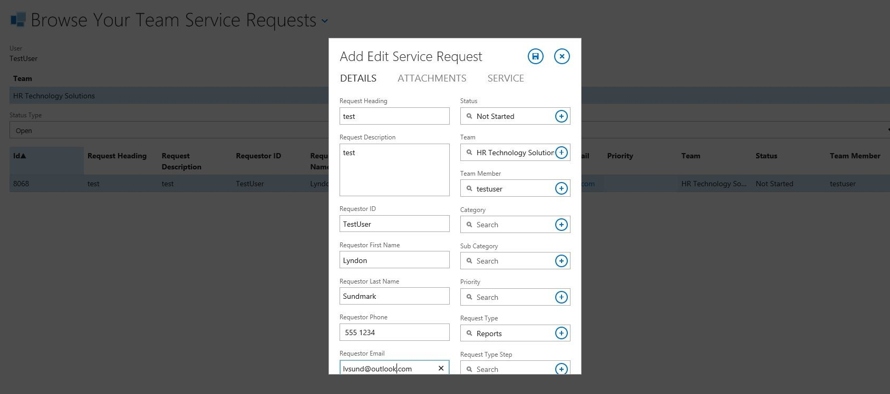
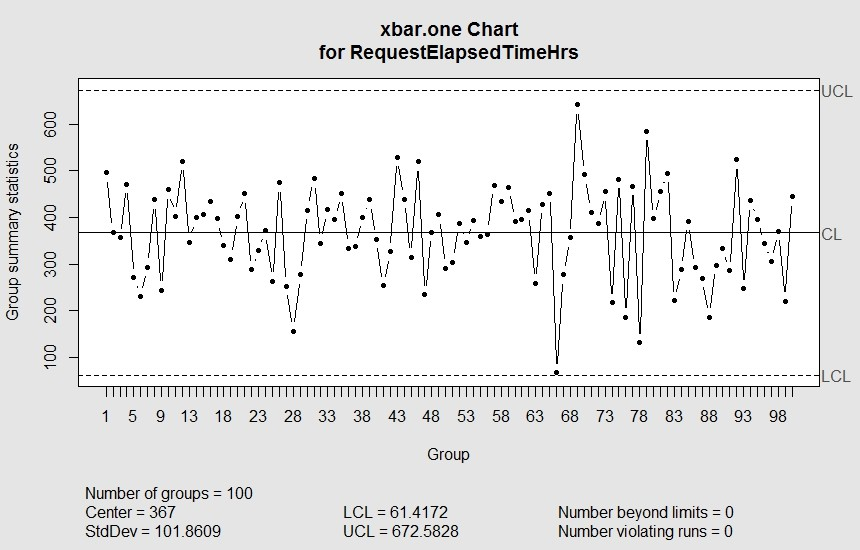
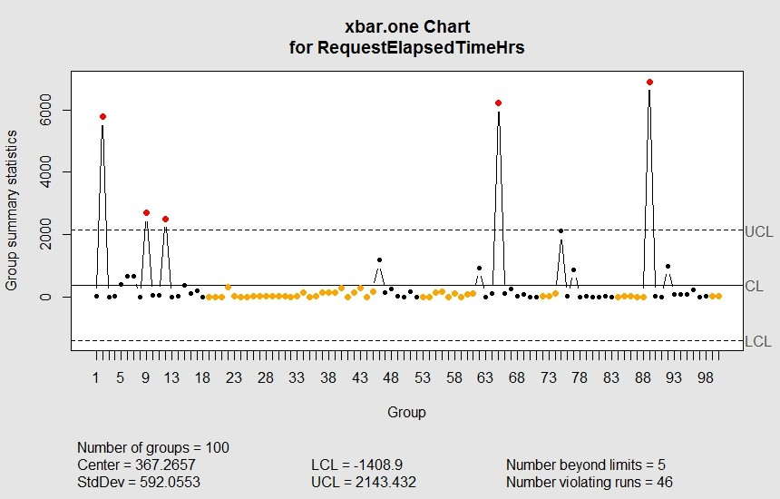

TL;DR;Data Driven HR Operations is an imperative if as HR we are ever going to get an accurate picture of our performance, our customers, and the continous improvement of HR Services
Introduction
Over the last few articles that I have written, I have talked about the criticality of being ‘data driven’ in HR to achieve what Workforce/HR/People Analytics desires to do for organizations- that being to improve the performance of the organization through the improvement of HR practices and processes.
I have also mentioned that if we want to get our heads around what the ‘totality’ of scope of ‘data driven’ for HR it can be helpful to think of HR metrics in the following way:
Metrics covering HR activity- what is actually going on with our human resources- i.e. traditional HR metrics such as turnover, hiring rates, absenteeism to name a few.
Metrics covering HR operations themselves- how good are we actually in how we operate
Metrics covering HR practices and methodology itself-deeply embedding metrics in our practices- how we actually do what we do as HR The above would cover much if not most of the domain of ‘data driven’ in HR.
This article will expand on the middle bullet point –Data Driven HR operations. What does this look like? What is necessary in terms of measurement to be data driven here? Can the R Statistics software help us here too?
Definition
First of all, it might be important to define, even if somewhat informally, what ‘data driven HR operations’ means. In keeping with the above intention of Workforce/HR/People analytics, it’s when we are capturing information about our HR operations with an intent to improve performance- in this case- specific to HR as a group/function within the organization. This is easy to put into words. Operationalization of it – not so much.
Most of us get the HR operations/ group/ function part. This is how most of us traditionally see ourselves- as an HR group- the aggregate of HR functions to help manage people in our organization. These include recruitment, hiring, training, compensation, labor relations, and performance evaluation as examples. And we understand ‘performance’ if it’s meant in the context of performance appraisals or evaluation. If this is your perspective of yourselves as HR, it is the ‘traditional’ perspective of HR both by the organization (rightly or wrongly) and often by HR itself. That ‘traditional’ perspective however is not necessarily conducive to being ‘data driven’. Here’s why:
It may cause HR to see itself as a series of functions rather than as a business. If it doesn’t see itself as a business – it may not understand that it has customers that it is accountable to. And those customers have needs.
The primary focus, especially if resources are tight, may be to simply get ‘our job done’- in other words get the requested activity finished and move on to the next. We might have neither the time nor the interest in knowing how well we did in the provision of our activity.
We may be myopic – in that – even if we are concerned with how well we did, we may achieve what we are doing at the expense of other areas of HR that are related to our part of HR, but separate from our specific HR function.
The traditional view of ourselves simply has no ‘natural’ impetus to ‘measure’ how well we are doing built into itself. We might see performance appraisal as the only ‘needed’ measurements of ourselves- and we do that on ourselves and expect the rest of the organization to carry this out- regardless of how much we do or don’t enjoy that process. And interesting enough, performance appraisals are neither visible nor relevant to our customers.
If the above points have even a remote ring of ‘truth’ to them in our collective HR experience, we need to think differently about HR. How do we do this? It means a different set of assumptions and a different model of HR operations.
Some Foundational HR Assumptions
We should stop seeing HR itself as a function, and more as a business.
A business has a reason to exist. It exists to provide a product or service.
The product or service has customers.
As HR we don’t ‘manufacture a product’- so we’re in business to ‘provide a service’.
Customers may or may not be happy with our service. If they are not satisfied with the quality of our service, they may cease to request it and look elsewhere. If enough of this is the case, we can go out of business (contracting out, outsourcing, offshoring).
The quality of our service is actually directly a function of the design of processes that exist(s) to provide/perform the service. Whether those processes are documented anywhere or understood- the end result of the provision of a service is not independent of a process that provides the service. The quality of our process impacts the quality of the service provided.
We can’t know what the quality of our service is unless we are asking the customer.
Changing the quality of our service means we need to change our process(es)
We can’t ask the customer if we don’t know who they are
We don’t know who they are unless we are recording that somewhere
We can’t remember their feedback unless we are recording it
Every request we receive in HR whether it be by phone or email is a Service Request for provision of an HR service.
Every HR Service Request is a moment of truth with our customer- we have either both satisfied and delighted our customer or we haven’t.
Our performing/completion of a request takes time. That time is categorized into wait time and actual performance time. The first is how long from the time we received it, that we actually started it. The performance time is from when we actually started it till actually completing it.
The total time it takes from receipt to completion is a function of the amount of resources available to provide the service.
Customers don’t appreciate wait time.
We can’t know what the total time is unless we are measuring it.
We can’t really improve anything if we aren’t measuring it.
Do we agree?
If so, we can’t read through the above list and not conclude that it screams a need for ‘data’. We can’t achieve any of the above without data, and any improvements to our HR Services will be ‘driven’ by that ‘data’. Being driven by that data means knowing what to collect, collecting it, and then knowing how to analyze it to improve out HR operations.
The rest of this blog article cover those areas. Like many of my previous articles, I will touch briefly on these areas- for purposes of whetting your appetite for ‘Data Driven’ HR. One could write books on the detail of this. Indeed the ‘analysis part’ of our HR operations data is covered by the field of quality improvement- for which many books have been written over the few decades. My intent is to describe the basics- as a beginning to understanding the applicability of this area to data driven HR operations.
To understand the ‘what to collect’ and ‘how to collect it’ we need to think about what requirements seem to be implied by the above assumptions, the suggested minimum data content, and consider what approaches are possible to collect the data.
Data Requirements
As much as is feasible and possible, we need to capture and record every interaction with our customers.
We need to know the details of the request for our service
We need to know who the customer was that requested it
We need to know exactly when the request came in
We need to know when the request was actually started in terms of being worked on
We need to know when the request was completed
We need to know who worked on it.
We need to know how satisfied the customer was with the service
We need to have the means to calculate the total time it took from when we received the request till when it was completed.
We need to have the means to calculate how much of that time was wait time and how much was actual performing of the services.
Suggested Minimum Data Content
The above data requirements would seem to suggest the following data content that needs to be captured:
A transaction id that helps differentiate each customer’s request from each other
A request heading or title – for quick reference
The request details- or detailed information
The requestor’s identity
The requestor’s contact information ( not so much for analysis- but for managing the request through to completion)
The category of the service (i.e. was it a recruitment request, a job classification request, a training request, a collective agreement interpretation etc.). Different types of services being provided might take different lengths of time to complete depending on the complexity of the request or the service provided. We will likely need to know this to make improvements later
The identity of the person who worked on the request.
The DateTime the request was received
The DateTime the request was started
The DateTime the request was completed.
The elapsed total time of the requested (derived from DateTime request completed – DateTime request received.
The wait time (derived from DateTime Started- DateTime Received)
The performance time (derived from DateTime completed- DateTime- started)
Customer satisfaction scale(at a minimum possibly a 5 point scale from extremely dissatisfied to extremely satisfied/delighted)
At an absolute minimum, the capturing of this information would allow us to know:
what interactions we are having with our customer
who are customers are
how well we are performing at least in terms of time
managing the services requests through their lifetime
what our customers think of the service we provided.
Approaches to Collect Data
Ultimately, I suppose, how you collect that data is up to you. Having said that, at least in my own experience, the best approaches are ones where the data needed is collected as a natural part of our HR business processes. This is likely always to be better than assigning ‘someone’ and ‘some process’ to capture this information after the fact for analytical purposes. It provides an ongoing real time picture to HR and it’s not onerous- so it is likely to collect this information reliably and efficiently.
But how can this ‘as part of the process’ come about? Well, it’s helpful to think in terms of customer relationship management (CRM) systems and Service Ticket categories of software. The idea behind these software approaches is that ALL interactions between service provider and customer is through these systems. All interaction is logged. When statuses of the service requests (tickets) have changed, these are all logged. As requests are received, processed and completed- they are managed through systems such as these. If you consider these, you still need to do your due diligence to determine whether they will work for you, and whether they capture the necessary information you need.
I used the above categories of software as illustrations of a way of thinking. As HR we too are a ‘Service Desk’. You don’t necessarily have to ‘buy’ the above categories of software. If your own organization is savvy- you can roll your own. Technologies such as SQL Server, with web based front ends that:
serve up to your customers only their requests

serve up to HR only requests by category to various teams (i.e. recruitment requests to recruitment, job classification to compensation etc.)

allow automatically logging of DateTime when submitted through web browser other DateTime stamps as the status changes logging who submitted the requests generally can accomplish much of both the data requirements and data content described above. The point is- it is doable and in a way that doesn’t get in the way of what we do in HR, but rather becomes the way by which we do it. As HR, we are a service, we have customers, and we are often seen as a service desk by our customers whether we see ourselves that way or not.
What do we gain by incorporating the above as the way we do HR business?
We record in one place, most if not all, business conducted by HR.
We can show Executive Management in real time on an ongoing basis, the volume of work that comes into our area.
We can see that volume by customer ( i.e. area of the organization)- when we do -we then see who are customers really are
We can see the volume of services requested by area of HR
We get an understanding and picture of the length of time it takes to provide our services
We get a view of how much ‘wait’ time is introduced into our business of HR due to insufficient resources
We get some basic feedback about our provision of HR Services that isn’t terribly cumbersome or invasive.
Without the intention of being disrespectful, I am amazed that ,in this day and age, more HR ERP software companies don’t build this HR ‘Service Desk’ type of functionality directly into their products, and why this type of software ( whether provided by ERP vendors or not) isn’t more commonly in use by HR groups. How do we show our worth to Executive Management without showing them a picture of the demands on the HR part of the organization? How do we as HR have a full and complete picture of our HR business without a picture of or view on this? And how do we think we can improve HR operations if we are not capturing this information and thereby ‘measuring’ our current performance and customer satisfaction to see if we are improving our service as time goes by?
The last question is the one that I would like to expand on next.
If we accept the premise that the purpose of workforce/HR/People Analytics is to improve the performance of the organization through the improvement of HR practices and processes –how exactly can we do this and how do statistical packages such as R assist in this?
Quality Improvement-SixSigma
The reason for highlighting above some foundational assumptions is that the relevance of quality improvement, and discussing one form of quality improvement tools such as SixSigma, might not be as well understood.
If you don’t see HR as:
Being a business
Having customers
Providing services
Seeing those services as ‘outputs’ of HR processes
Understanding HR processes as requiring inputs
Understanding that the quality of HR services/outputs are based on the quality of HR processes and HR inputs
Understanding that changing the quality of outputs requires changes to the quality of inputs and processes
then this section will likely be irrelevant to you.
Quality Improvement methodologies such as SixSigma have as their intention the improvement of product or service .This is done by applying the scientific method to process improvement. Again, I won’t get into detail on this subject in this article- because room would not allow for it. But at its heart it includes the following steps known by the acronym (DMAIC):
Define
Measure
Analyze I
mprove
Control
A wealth of books have been written on this subject. I will mention a couple of these books below shortly.
Since we understand from the above that the quality of the service is a function of the quality of the process and the inputs- we are trying to understand the interaction of these. One of the first questions we need to ask is ‘what is the ’measure’ of quality we use for the service being provided’. There can and should be several (the voice of the customer), but one that is often present in most cases is the time it takes to provide a service. Take too long, and customer is either disappointed or pissed off. Do it sooner than expected and the customer is either satisfied or even better-delighted. Provide for customer satisfaction at a ‘delighted’ level consistently over time is even better. Having this consistency and continuing to ‘shorten’ the time required to provide the service is even better yet. These are the purposes of the application of quality improvement methodologies to HR processes.
Take a look at the charts below of some hypothetical service requests and the elapsed time in hours it takes to complete them (total time- from receipt to completion):
What do these charts tell us?


100 requests have been simulated in both the above examples
In any HR business process, there will be an average length of time it takes to complete a service request.
Both show processes that have an average time (center) of elapsed time hours to complete of 367 hours
There will also be standard deviations around the calculations of an average. The charts show different standard deviations (StdDev)
Quality improvement methodologies will typically have ‘control’ limits around the ‘average’- i.e. how much variation.
When the length of time it takes to complete a request is within an upper control limit (UCL) and a lower control limit (LCL), the process is said to be ‘in control’. Any request where the length of time is outside of those bounds, and the process is typically deemed to be ‘out of control’. The first diagram shows a process ‘in control’. The second shows a process ‘out of control’
The intent of quality improvement is to design business processes that firstly bring the process into control- so that the performance of the service is stable. Then the intent is to improve the quality of the performance by improving the process. Improving the process above would mean lowering the CL line (average) and tightening the UCL and LCL lines around the lowered CL line (reducing the variation).
The more the variation is reduced the higher the consistency of the provision of service ( reliability)
When you think about it, the one type of diagram above can provide us a bucket load of useful information, and give us a direct meaningful view of our operations.
SixSigma is one of the most well-known quality improvement methodologies out there. The methodology goes way beyond just the provision of charts like the above. It is an entire methodology around process ‘improvement’. My example above barely scratches the surface.
In my own ‘reading’ travels I have come across a couple of good books on SixSigma:
The Six Sigma Handbook
http://www.amazon.ca/The-Sigma-Handbook-Fourth-Edition/dp/0071840532
Achieving HR Excellence through Six Sigma
The point of sharing all the above- is to understand that being ‘data driven’ in HR also includes being ‘data driven’ with respect to our HR operations. Some might consider this area less interesting and less sexy than some of the typical HR analytics that might get more visibility- HR ROI, prediction of high performers that leave the organization etc. The fact is concentration on our business processes and improvement of them makes us more productive, by shortening time and eliminating poor quality. Presumably being more productive would allow for a better ROI. HR ROI calculations may indicate the organization has a problem (or not) - but in and of themselves are likely incapable of suggesting any solutions for improvement.
How Does the R Statistics Software Contribute To Being Data Driven in Our HR Operations?
If you have read any of my previous blog articles, you will know that R is one of a number of statistical packages that exist out there. Its benefit as compared to some of the alternatives is that it’s free and it has a huge scope in terms of statistical procedures that it includes. And even within that you can have several different procedures that are variations on the same thing- more than one way to do things.
Such is the case with quality improvement in R as well. There are a number of procedures or libraries within R that are available for quality improvement. Two of these libraries that I am familiar with are qcc and SixSigma. (Yes, R does have SixSigma library that provides certain statistical procedures that assist in the SixSigma quality improvement initiatives that an organization may choose to undertake.)
The previous graphic made use of the qcc library with the following R commands
library(qcc)
qcc(“the length of time field in your data”,“xbar.one”)
“xbar.one” is a specific type of quality control run chart.
The SixSigma library concentrates on statistical and graphical tools that center around the above DMAIC steps. If my memory serves me correctly, some of the things the R library helps with are process maps, control charts, and cause effect diagrams. There is actually a book that has been written by the authors of the SixSigma library in R called:
Six Sigma With R: Statistical Engineering for Process Improvement written by Cano, Moguerza, and Redchuk.
Conclusion
‘Data Driven’ is central to our ability as HR professionals and organizations to achieve improvement in organization performance through the capturing and use of Workforce/HR/People analytics. The scope of ‘data driven’ does include HR operations information as well. The possibility of HR and their organizations to benefit from this however is based on their ability and willingness to:
HR seeing itself as a business Start logging all interaction with their customers Measuring that interaction both in terms of time taken to perform services and the feedback from their customers Understanding the role Quality Improvement plays in HR operations measurement and the methodologies that assist them in this ( ie SixSigma) Significantly increasing both knowledge and application of statistical analysis packages, procedures and tools to fully realize ‘data driven’ operations Often as HR professionals we are left with the impression from Executive Management and other parts of the organization that HR needs to justify its existence. On a personal level I don’t support or agree with that mindset. Organizations require HR Services regardless of HOW they are provided- whether from inside or outside the organization. HR Services DO need to exist. The real question is HOW they are to be provided and by WHOM. We are in a much better position to make the argument that it should be us, when we are measuring the performance of our HR Services in the above ways, and require any thought of outsourcing these services to provide verifiable evidence that they can do better with the same level of resources.
About Lyndon Sundmark, MBA
Lyndon is a retired HR Professional with over 40 years experience of applying a ‘data-driven’, ‘evidence based’ mindset to HR practices in organizations in a variety of roles and industries.